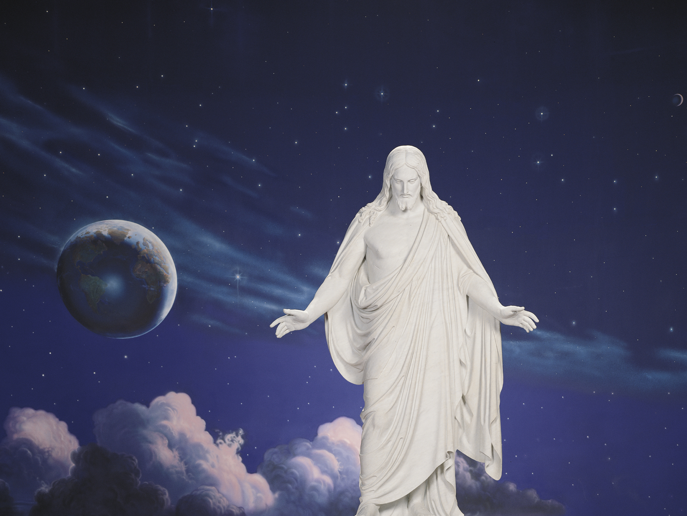

Twas battered and scarred, and the auctioneer Thought it scarcely worth his while To waste much time on the old violin, But held it up with a smile:
“What am I bidden, good folks,” he cried, “Who’ll start the bidding for me?” “A dollar, a dollar”; then, “Two!” “Only two? Two dollars, and who’ll make it three?
Three dollars, once; three dollars, twice; Going for three—” But no, From the room, far back, a gray-haired man Came forward and picked up the bow;
Then, wiping the dust from the old violin, And tightening the loose strings, He played a melody pure and sweet As a caroling angel sings.
The music ceased, and the auctioneer, With a voice that was quiet and low, Said, “What am I bid for the old violin?” And he held it up with the bow.
“A thousand dollars, and who’ll make it two? Two thousand! And who’ll make it three? Three thousand, once, three thousand, twice, And going, and gone!” said he. The people cheered, but some of them cried, “We do not quite understand What changed its worth.” Swift came the reply: “The touch of a master’s hand.” And many a man with life out of tune, And battered and scarred with sin, Is auctioned cheap to the thoughtless crowd, Much like the old violin. A “mess of pottage,” a glass of wine, A game—and he travels on. He’s “going” once, and “going” twice, He’s “going” and almost “gone.” But the Master comes, and the foolish crowd Never can quite understand The worth of a soul and the change that’s wrought By the touch of the Master’s hand.The Christus
